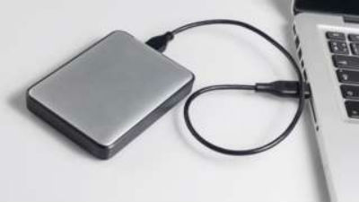

Sign in


Technology
The man refuses to decrypt hard drives seized during an investigation
child sexual abuse images.
 1 hour ago Technology
1 hour ago Technology
Apple rejects order to unlock killer's phone
